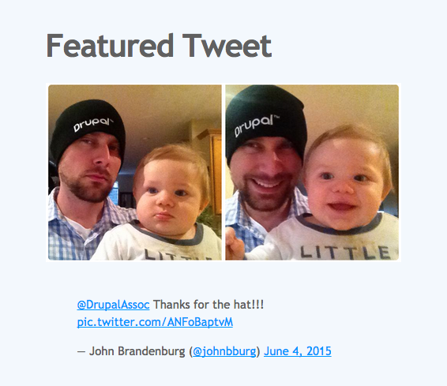
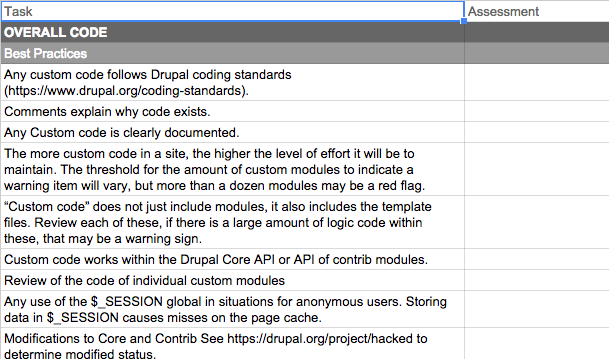
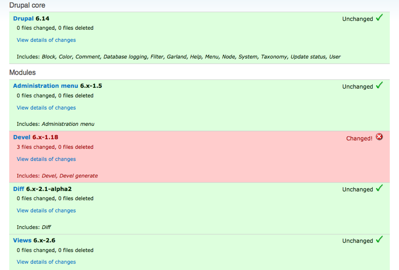

Nice to Meet You!
John Brandenburg, Senior Developer, Forum One
Why Audit?
Catalog Technical Debt
Coined by Ward Cunningham

Didn't want to just Go through a list of best practices.
But here it is.
The Checklist
How to use this document.
- Assess: Build a mental model.
- Action: Make a recommendation.
- Estimate: Cost to fix.
What you will need
- Access to code
- Copy of database
- Admin accounts
- Shell/remote access to production/staging environment
Stand up a copy of the site.
Review status of site on host. Reports > Status Report
General Best Practices
Quick Checks
Prod Check https://www.drupal.org/project/prod_check
(admin ui that expands on status report)
Site Audit: https://www.drupal.org/project/site_audit
(drush commands generate reports)
Hacked!
The Drupal Patching Ecosystem
There is a process
The point is to document these modifications. And share!
drupalroot/
patches/
project/[project]-[description]-[issue]-[comment]-[core-version].patch
https://www.drupal.org/patch/submit
And there should be an issue filed in the project's queue. Even if it just supports your use case!
Any custom code follows Drupal coding standards (https://www.drupal.org/coding-standards).
You don't need to memorize these! https://www.drupal.org/project/coder
Use the API
Views Example:
$view->display['default']->handler->options['filters']['changed']['value'] = '2025-04-30 00:00:00';
Vs.
$filters = array();
$filters['changed'] = '2025-04-30 00:00:00';
$view->set_exposed_input($filters);
Documentation
It exists, is correct, and ideally, focuses on the why, over the how.
// When the number of items exceeds the visible items,
// resetting the width will collapse the size to
// the viewport width and cause all items be in view.
if ( numItems >= visibleItems ) {
return;
}
Other tidbits
- Use of $_SESSION for anon users.
- Heavy use of includes (dozens).
- Is version control in use?
- Location of webroot in VCS (exception: Pantheon)
Modules
Site Configuration / Architecture
How were pages engineered? Was the approach done in a best practices manner?
Blocks < Context < Panels
Is configuration tracked?
Exported to Features/Config Management.
Are exported features cohesive? They should be restricted one feature per bundle type, not one single, site-wide feature.
File system
images/field-name/[year]/[month]
Security Review
This spans site code/config and the hosting environment.
Modules are up to date with security releases.
No “PHP fields/Input modes” are used on the site.
This isn't just a security issue. Try indexing solr with a drupal_goto().
High access input formats are only granted to appropriately vetted users (e.g. full html should be restricted to trusted roles).
Anti-spam technology is required for any open user registration.
- Captcha
- Honeypot
- Mollom
- Community manager
The hosting environment is up to date.
Hosting Vs. Managed Hosting.
Any development or staging instances of the site are hidden from unauthorized access/search indexing.
Any unused user ssh or (s)ftp user accounts are discontinued.
ssh uses public/private key authentication instead of passwords. At least 2048 bits.
General web-server best practices:
Hosting Environment
What is the current update status of software packages? (php, mysql, apache). Note PHP 5.3.3 on RHEL 6 systems is vendor supported.
php memory limits (We normally use 192MB)
If APC is used shm size (~96MB - 128MB)
APC is not a very good general back-end cache for Drupal. Poor fragmentation hits performance.
Front End
CSS well architected. Avoid duct tape themes.
Overuse of templates?
Display Suite!
Business logic in theme layer?
The only if statements should be checking that a variable is set or not empty.
Process
Deliverable requirements. What does the client expect from your support?
Opportunities
General opportunities for improvements
Upsell your services!
- Analytics
- UX/Design
- Solr Search